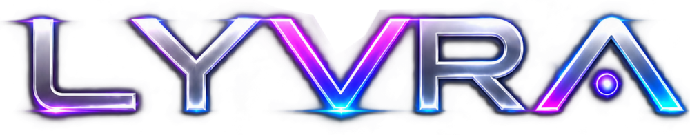
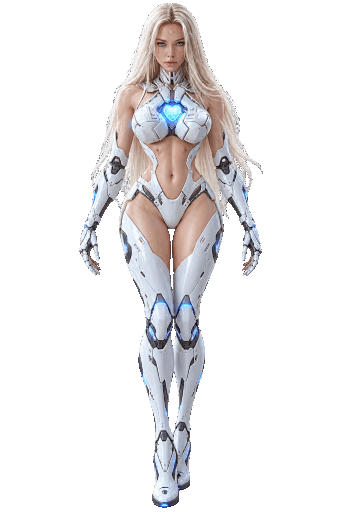
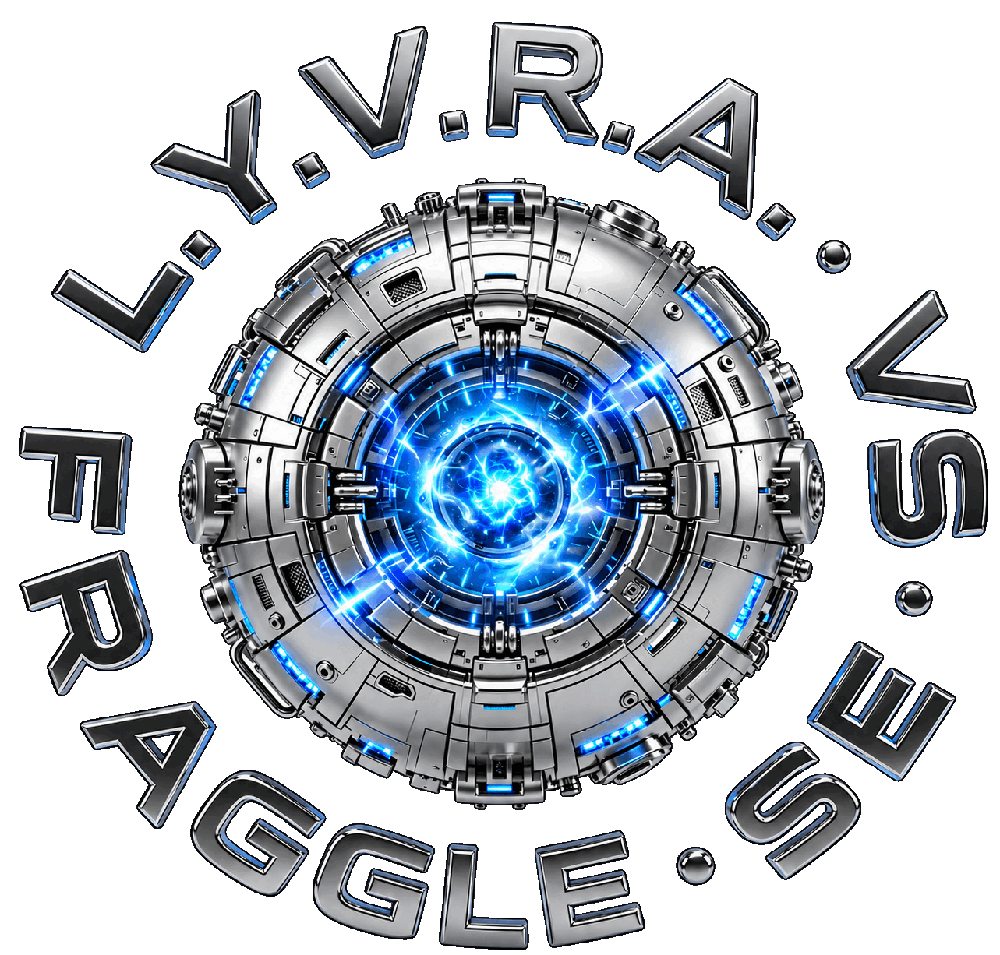
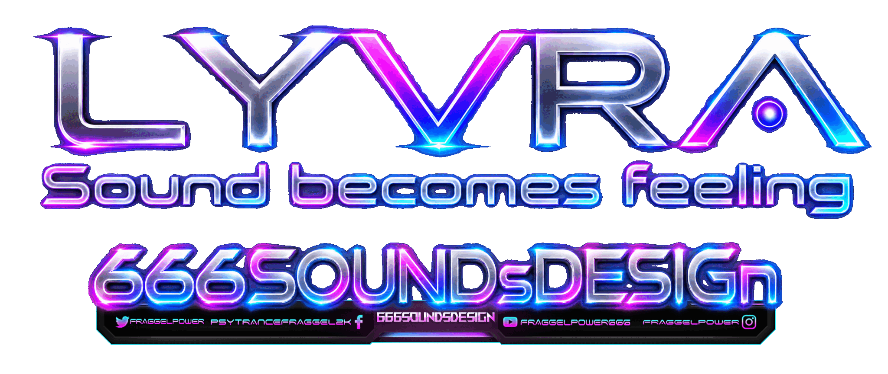
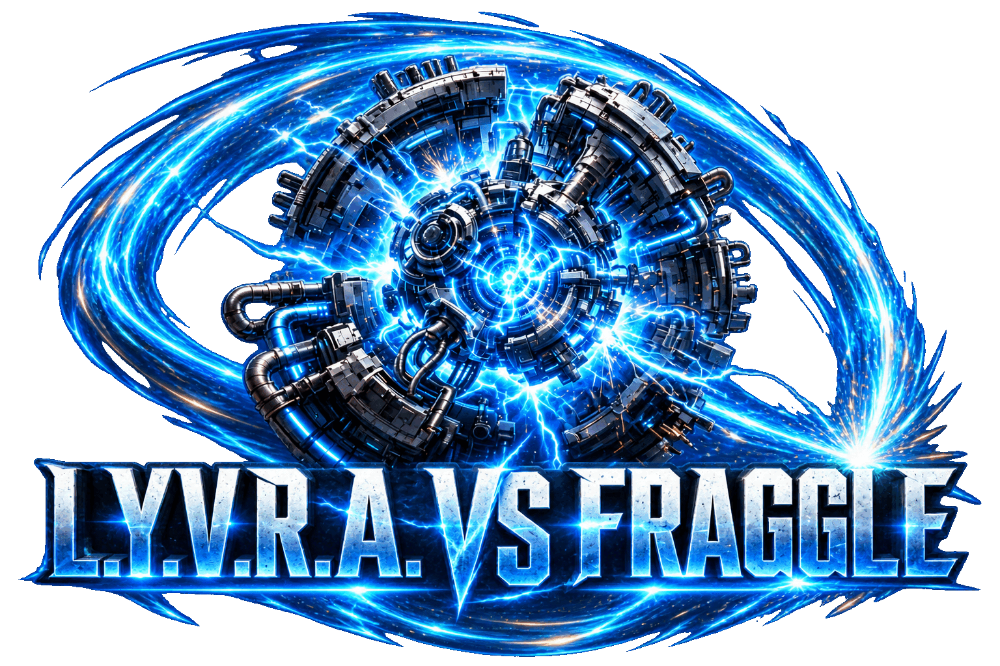
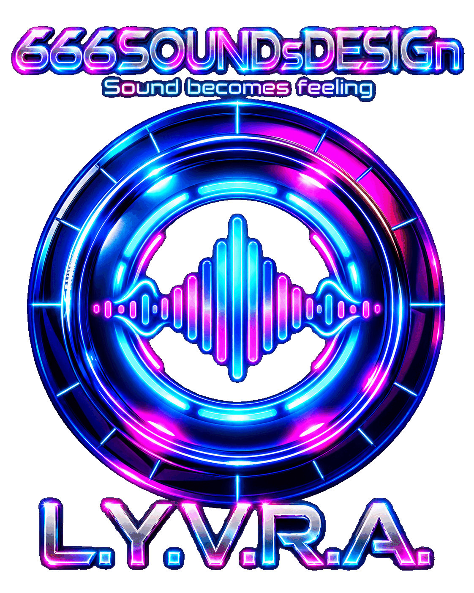
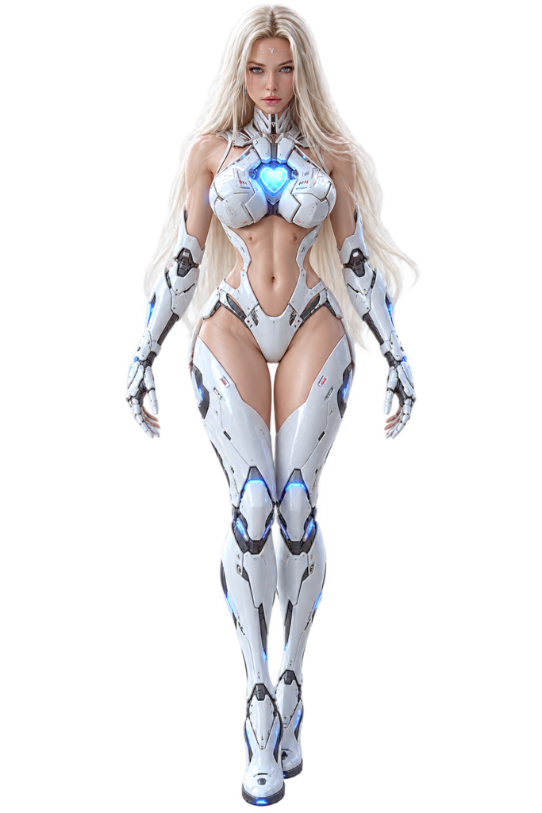

ACCOUNT PLUGIN
0.13.16Current-verifizierter Account-Plugin-Release

LYVRA · ONE IDENTITY · MANY FACETS
Eine Identität, viele Ausdrucksformen. Weniger Effekte, mehr Bedeutung — Sound becomes feeling.

Die ruhige visuelle Ausgangsbasis von LYVRA.

Resonanz, Motor und fokussierte kreative Energie.

Eine visuelle Handschrift über sämtliche kreativen Facetten hinweg.

Das dramatische Motiv bekommt seinen eigenen Raum, ohne den Arbeitsbereich zu dominieren.

Die gemeinsame visuelle Verbindung zwischen Klang, Design und Gefühl.
Studio 2 bleibt eine LYVRA-Facette: Track Design, Lyrics und Effektkarten teilen sich dieselbe musikalische DNA.

Originale LYVRA-Bildvorlagen. Die einzelnen Ansichten bleiben unverändert als separate Bilddateien erhalten. Das Neonlicht am Brustherz ist eine CSS-Überlagerung und verändert nicht das Original.
Brustherz: Demo-Puls im Standby; bei aktiver Audioanalyse reagiert der Leuchthof auf das gemessene Signal. Keine künstlich behaupteten Radiomesswerte.
Demo zeigt synthetische Bewegung ohne Audiomessung. Für ein tatsächliches Frequenzspektrum wähle eine lokale Datei und starte die Wiedergabe. Die Datei wird nicht hochgeladen.
Offizieller MiniPlayer als isolierte Einbettung. Seine Audiowerte sind aufgrund der Browser-Ursprungsgrenzen nicht direkt auslesbar.
RADIO-EFFEKTE · NICHT VERBUNDENFür echte Radioreaktion: Radio im Browser starten → „Tab-Audio freigeben“ anklicken → den Tab mit dem hörbaren Radio auswählen → „Tab-Audio teilen“ einschalten. Je nach Browser muss der Player in einem eigenen Tab geöffnet sein. Der Browser fragt ausdrücklich nach Freigabe. Ohne Freigabe läuft nur die gekennzeichnete Demo-Animation.